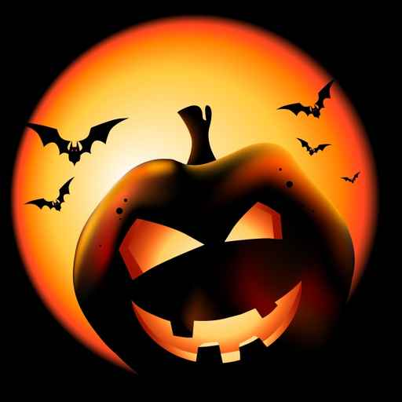
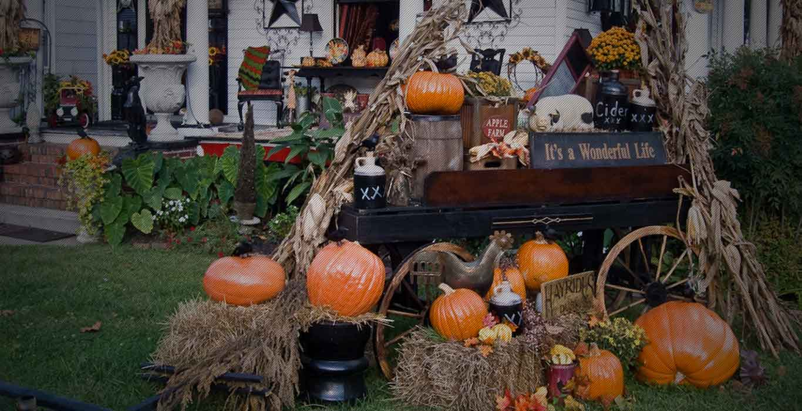

"O Halloween, em declaração feita no ano de 2009 pelo Vaticano, foi condenado como uma festa perigosa carregada por vários elementos anticristãos. No Brasil, observamos que algumas pessoas torcem o nariz para a comemoração do evento por entendê-lo como uma manifestação distante da nossa cultura. No fim das contas, muito se diz a respeito, mas poucos são aqueles que examinam minuciosamente os significados e origens de tal festividade. Origens essas que remetem à Idade Antiga e aos celtas, povos que existiram entre 600 a.C. e 600 d.C."
Veja em: História do Halloween

História do Halloween nos Estados Unidos
"Ao chegarem à América do Norte, os irlandeses trouxeram a festa do Halloween para as Américas e transformaram a lanterna de Jack em uma abóbora iluminada com feições humanas. Os disfarces e máscaras, tão usados pelos participantes da festa, seriam uma forma de evitar que fossem reconhecidos pelos espíritos que vagam nesse dia. Atualmente, as fantasias são utilizadas por cri"
Veja em: História do Haloween nos EUA

Lenda do Halloween: Stingy Jack
"Entre todos os desalmados, destaca-se a antiga lenda de Stingy Jack. Segundo o mito irlandês, Jack teria convidado o Diabo para beber com ele no dia do Halloween. Após se fartarem em bebida, o astuto Jack convenceu o Diabo a se transformar em uma moeda para que a conta do bar fosse paga. Contudo, em vez de saldar a dívida, Jack pregou a moeda em um crucifixo.
Para se livrar da prisão, o Diabo aceitou um acordo em que prometia nunca importunar Jack. Dessa forma, ele foi libertado e nunca mais importunou o homem. Entretanto, Jack morreu e não foi aceito nas portas do céu por ter realizado um trato com o demônio. Ao descer para os infernos, também foi rejeitado pelo Diabo por conta do trato que tinham. Vendo que Jack estava solitário e perdido, o demônio lhe entregou um nabo com carvão que lhe serviu de lanterna. Essa lanterna, então, tornou-se um dos principais símbolos do Halloween, mas com o nabo sendo, com o tempo, substituído pela famosa abóbora.
Por Rainer Gonçalves Sousa
Professor de História"
Veja em:Lenda do Halloween